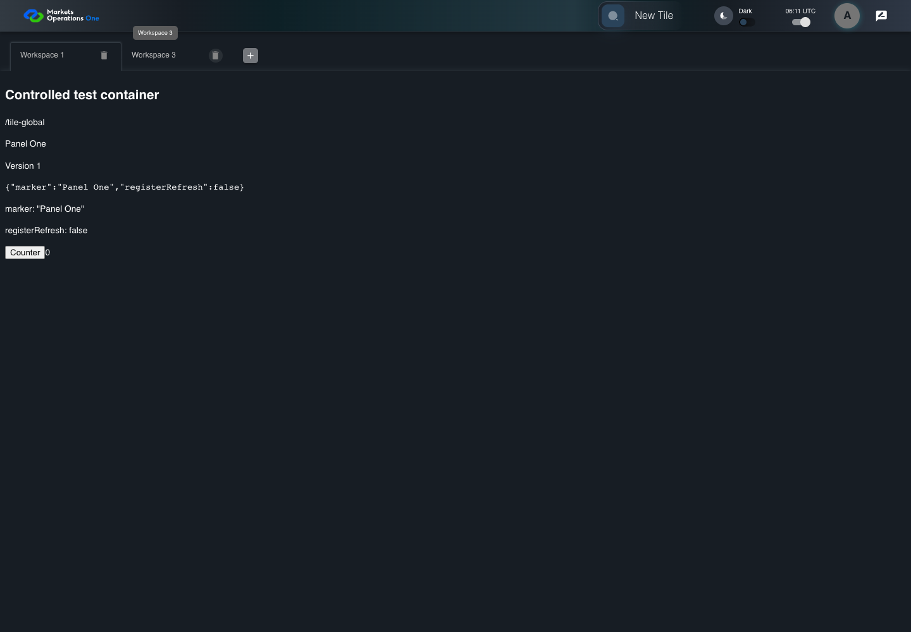

UI-SHL-012 remove selected middle workspace
PASS · application/run-050/ui-shl-012-remove-selected-middle-workspace-4f28533cd4d6-attempt-1 · ACTUAL_APPLICATION_LOCAL_SERVICES
Actual current React shell and browser storage. Controlled login/validation/activity renewal, UI-USER-01 permissions, catalog, and SystemJS React component. Markers, counter, and registered refresh callback are controlled fixture observations. No real business tenant or BFF authorization acceptance.
2026-10-22T06:11:00.576Z to 2026-10-22T06:11:03.427Z
Assertions and result · Artifact manifest · Exact run inputs and source hashes
Result SHA-256:8d168f566d7008cf3b594a38254661f01aef4e8461088a8cc0946218d7a2ebf1Screenshot capture: CAPTURED. Named frames: 8.
Step screenshot evidence: COMPLETE. 7/7 canonical steps have execution screenshots.
Canonical step timeline
Given User A is authenticated as fixture UI-USER-01 with the case-specific permissions
Execution: PASSED.1. step-01 Visible state after step 1: Given User A is authenticated as fixture UI-USER-01 with the case-specific permissions
2026-10-22T06:11:01.548Z · 1440×1000
Step: /Users/lushevol/code/github/ratan-release-impact/workbench/tasks/ui-test-coverage-20261022/test-cases.md:5743
SHA-256:27188d60d57043ea1a65e02ed01bce5f48b37b3016806dad77e343f43ef36206And W1, W2, and W3 exist and W2 is selected
Execution: PASSED.2. step-02 Visible state after step 2: And W1, W2, and W3 exist and W2 is selected
2026-10-22T06:11:02.472Z · 1440×1000
Step: /Users/lushevol/code/github/ratan-release-impact/workbench/tasks/ui-test-coverage-20261022/test-cases.md:5744
SHA-256:e7f0672fce2454599e5ae5a1aac79245ca407498747d95ac93a5b98df29e1dc5When User A clicks icon button named "delete" inside the W2 workspace tab
Execution: PASSED.3. step-03 Visible state after step 3: When User A clicks icon button named "delete" inside the W2 workspace tab
2026-10-22T06:11:02.588Z · 1440×1000
Step: /Users/lushevol/code/github/ratan-release-impact/workbench/tasks/ui-test-coverage-20261022/test-cases.md:5745
SHA-256:05c3e35c89d9f69d9518e7232887c25b14c92614cfbb62b95fc1bca1553bbe09Then tab with source identity "Workspace Name textbox value Workspace 2" inside the shell tablist named "workspaces" is absent
Execution: PASSED.4. step-04 Visible state after step 4: Then tab with source identity "Workspace Name textbox value Workspace 2" inside the shell tablist named "workspaces" is absent
2026-10-22T06:11:02.696Z · 1440×1000
Step: /Users/lushevol/code/github/ratan-release-impact/workbench/tasks/ui-test-coverage-20261022/test-cases.md:5746
SHA-256:40aa6cfafaad274b40b624cf19ee672fa9ba1554c6af300d1845e019d378f562And tab with source identity "Workspace Name textbox value Workspace 1" inside the shell tablist named "workspaces" is selected
Execution: PASSED.5. step-05 Visible state after step 5: And tab with source identity "Workspace Name textbox value Workspace 1" inside the shell tablist named "workspaces" is selected
2026-10-22T06:11:02.780Z · 1440×1000
Step: /Users/lushevol/code/github/ratan-release-impact/workbench/tasks/ui-test-coverage-20261022/test-cases.md:5747
SHA-256:ddc68005c8792210ba6f0f5c5334241476ff42f2df34db8eae18bd08ea489104And the tab count inside the tablist named "workspaces" equals 2
Execution: PASSED.
6. step-06 Visible state after step 6: And the tab count inside the tablist named "workspaces" equals 2
2026-10-22T06:11:02.842Z · 1440×1000
Step: /Users/lushevol/code/github/ratan-release-impact/workbench/tasks/ui-test-coverage-20261022/test-cases.md:5748
SHA-256:2a98def3006cc4df465284eede3be4b9cddf3ef8b26c969da4b8d9e525e9128aAnd text with text "Panel Two" inside the removed W2 tabpanel is absent
Execution: PASSED.7. step-07 Visible state after step 7: And text with text "Panel Two" inside the removed W2 tabpanel is absent
2026-10-22T06:11:02.922Z · 1440×1000
Step: /Users/lushevol/code/github/ratan-release-impact/workbench/tasks/ui-test-coverage-20261022/test-cases.md:5749
SHA-256:8ce4a0d93cd221d15aa678a9e4dcbbd3f7ff57665b2023644aa317ae4c6620ef


Additional named frames

Screenshots establish visible state only. Assertions and traces support functional claims.